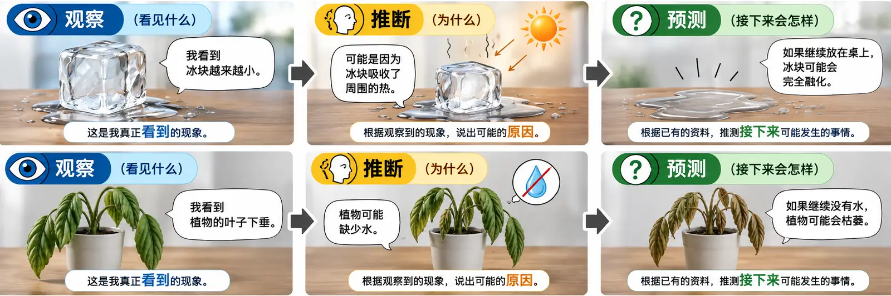

第一单元 · 科学技能 · Page 2 / 4
图解理解：观察、推断、预测
记住一条路线：看见什么 → 为什么 → 接下来会怎样。这三个概念分清楚，后面的科学题就顺很多。

观察：写真正看到、听到或测量到的现象。
推断：根据观察到的现象，说出可能的原因。
预测：根据已有资料，推测接下来可能发生什么。
我会分辨
每题选择「观察」「推断」或「预测」。选错会立即显示提示。
1. 水的温度是 60°C。
2. 水温升高可能是因为受到加热。
3. 继续加热，水温可能会继续上升。
4. 我看到天空有很多乌云。
5. 乌云出现可能是因为空气中有很多水蒸气。
6. 如果乌云越来越多，可能会下雨。
记一记：观察 = 看见什么；推断 = 为什么；预测 = 接下来会怎样。
得分：0 / 6
重新作答